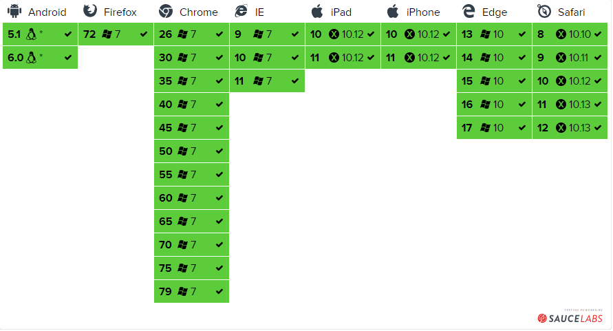
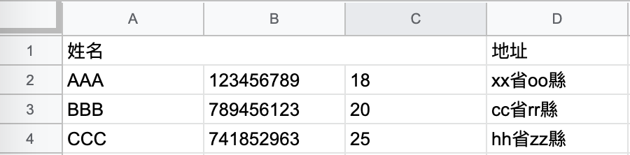

# [Javascript] 使用 JS-XLSX 將 JSON 匯出成 EXCEL
長久以來，公司同仁每每要求我們為其製作匯出報表功能時，總是以 *.csv 為主， *.csv 是以純文字方式記錄資訊，但是可以供 Excel 轉換為表格的一種文件格式，然而其無法支援樣式、合併儲存格等比較進階的表格樣式。偏偏這次公司同仁的需求希望達到能夠合併儲存格，因此只好來研究一下如何匯出 Excel 格式的檔案了。
這次用到的套件是這款 JS-XLSX 。功能完整，支援眾多格式： xls , xlsx , ods …etc. 也可以支援合併儲存格。因此本文將介紹如何以此套件達成合併儲存格，並且匯出 *.xlsx 的方法。
# 兼容性

# 使用方法
如同一般，我們可以使用 npm 進行安裝。
npm install xlsx
另外，為了能夠支援檔案匯出，我們要另外預裝 file-saver
file-saver
# 開始使用
XLSX 已經幫我們包好了很多工具了，我們僅需要依照規則給予相對應的資料格式，即可做出 excel 的資料物件。
建立 Workbook
在 Excel 的世界中，資料格式分成了 Workbook 、 Sheet 、 Cell 。Workbook 顧名思義，我們在將 JSON 轉換成 Excel 時，也必須讓程式知道資料該怎麼呈現。通常我們
Workbook
首先，我們先定義一個 Workbook 作為 Excel 的 Workbook ，用來儲存等等要塞資料的 WorkSheet。
class Workbook { | |
constructor() { | |
// 使用單例模式，產生唯一的 workbook | |
if (!(this instanceof Workbook)) return new Workbook(); | |
/** | |
* SheetNames 與 Sheets 兩者在 Workbook 中不可或缺， | |
* 此為 XLSX 工具將 Workbook Object 傳為 Excel blob 時提取資料的位置。 | |
/ | |
this.SheetNames = []; // 儲存 Sheet 的名稱。 | |
this.Sheets = {}; // 儲存 Sheet 的物件內容 | |
// 自定義 workbook optional object。 | |
this.wopts = { | |
bookType: 'xlsx', // 要生成的文件类型 | |
bookSST: false, // 是否生成 Shared String Table。官方解釋是如果開啟生成速度會下降，但在低版本 IOS 設備上有更好的兼容性 | |
type: 'binary' | |
}; | |
} | |
/** | |
* 塞入 Sheet | |
*/ | |
appendSheet(sheet, name = `sheet${ this.SheetNames.length + 1 }`) { | |
this.SheetNames = [...this.SheetNames, name]; | |
this.Sheets[name] = sheet; | |
} | |
toBlob(option = this.wopts) { | |
// 字串轉 ArrayBuffer | |
function s2ab(s) { | |
var buf = new ArrayBuffer(s.length); | |
var view = new Uint8Array(buf); | |
for (var i = 0; i !== s.length; ++i) view[i] = s.charCodeAt(i) & 0xFF; | |
return buf; | |
} | |
var wbout = XLSX.write(this, option); | |
var blob = new Blob([s2ab(wbout)], { type: 'application/octet-stream' }); | |
return blob; | |
} | |
isEmpty() { | |
return !this.SheetNames.length && JSON.stringify(this.Sheets === "{}"); | |
} | |
} |
使用 Workbook 產生一個 instance。
const workbook = new Workbook();
定義好 Workbook 之後，我們就能夠來正式進行將 JSON 轉換成 Sheets 的工作了。
官方其實提供了不少的現成的工具，我們可以直接使用。
aoa_to_sheet: 這個工具可以將二維陣列轉換成 sheet，並且自動處理好 number、string、boolean … 等等類型的數據。table_to_sheet: 可以將以個table dom直接轉換成 sheet，並且自動識別colspan、rowspan。如果要轉換的資料已經在 table 中，這會是個不錯的選擇。json_to_sheet: 將一個由 Object 組成的 Array 轉換成 sheet (沒有用過)。
今天我們使用的是第一個 aoa_to_sheet
舉個例子：
const data = [
['姓名', '電話', '年齡', '地址'],
['AAA', 123456789, 18, 'xx省oo縣'],
['BBB', 789456123, 20, 'cc省rr縣'],
['CCC', 741852963, 25, 'hh省zz縣'],
];
如此就轉換完一張 sheet 了。
接下來將我們的 sheet 塞入剛剛定義好的 workbook instance。
workbook.appendSheet(sheet, 'sheet_name_1');
如此就能完成了將 JSON 轉換成 Excel Workbook 了。
# 匯出成 Excel
最後，要匯出成 Excel 就要用到我們一開始安裝的 file-saver 。
將剛剛做好的 workbook 轉成 blob 餵給 file-saver，讓他自動幫我們匯出成 Excel，並且下載。
FileSaver.saveAs(workbook.toBlob(), `workbook_name.xlsx`);
如此，就完成了 Excel 的製作與匯出了！
# 合併儲存格
如果只是為了製作 Excel 並且匯出，我們根本不用這麼大費周章地轉成 XLSX 的格式，使用 CSV 就好了，還比較簡單省事。
使用 XLSX 當然是為了做一些 CSV 無法做到的事情啦～ 例如： 合併儲存格 。
要合併儲存格，我們必須在 sheet 中增加 !merge 屬性，以此來定義哪些格子要被合併。並且依照如下的規則。
sheet['!merges'] = [
// s: start,
// r: row,
// c: column,
// e: end.
// 因此，這個 object 會設定合併從 (0, 0) 到 (0, 2) 的儲存格。
{s: {r: 0, c: 0}, e: {r: 0, c: 2}}
];

另外，記得若要合併儲存格，被合併的格子內的資料，請自行預留空格，無論是 null, 或是 空字串 ( ‘’ ) 都可以，以免資料被合併儲存格給覆蓋掉。
# 總結
使用 Javascript 的方式製作匯出 Excel 的步驟與方法大約就如以上所述，至於自定義 XLSX 的樣式，網路上查到的結果在 js-xlsx 免費版中似乎並不支援，要另外使用 style-xlsx 補強，這部分我就沒有深入研究了。
也許未來有機會再嘗試看看吧～！
# 參考資料
- 使用 js-xlsx 純前端匯出 excel
- 如何使用 JavaScript 实现纯前端读取和导出 excel 文件
- vue-element-admin